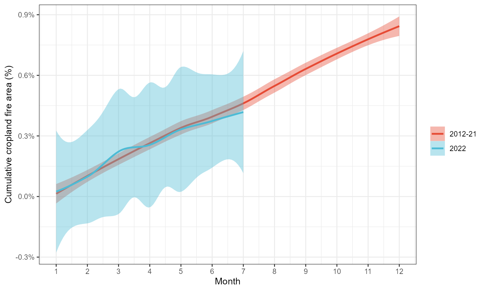

Ukraine Fire Analysis
Michael Wellington, Roger Lawes and Petra Kuhnert
4 August 2022
Ukraine_fire_analysis.RmdOverview
The following script accompanies the paper by Wellington et al. (2022) that explores the fire incidence data at a 25-km spatial resolutions for each day from the 1st of January 2012 through to the 20th of July 2022 in Ukraine.
We first load the library and relevant fire data.
library(UkraineCrops)
data(fire_mod_df)We tidy the data to construct the percent fire pixels
from total pixels in preparation for plotting. We have selected pixels
showing fire and omitted NAs from the dataset for this vignette to
reduce data size. We therefore have to record the number of pixels in
our original, larger dataset, so that we can calculate the % of pixels
with active fires.
# Note that there are 3034 pixels during data extraction.
# Store this so we can calc. % fire pixels from total pixels
pixels <- 3034
# % fire analysis
month_pc_ts <- fire_mod_df %>%
mutate(fire_inc=if_else(fire=="NaN", 0,1)) %>%
group_by(year, war,month) %>%
summarise(fire_pc_mean = mean(sum(fire_inc)/(pixels*length(unique(date)))))## `summarise()` has grouped output by 'year', 'war'. You can override using the
## `.groups` argument.
month_pc_ts <- month_pc_ts %>% group_by(war, month) %>%
summarise(fire_pc = mean(fire_pc_mean),
fire_pc_sd = sd(fire_pc_mean, na.rm = TRUE))## `summarise()` has grouped output by 'war'. You can override using the `.groups`
## argument.
# Cumulative fire area plot
cum_plot_dat <- fire_mod_df %>% mutate(fire_inc=if_else(fire=="NaN", 0,1)) %>%
group_by(year, war,month, day) %>%
summarise(fire_pc_mean = mean(sum(fire_inc)/(pixels*length(unique(date))))) %>%
group_by(war, month) %>%
summarise(fire_pc = mean(fire_pc_mean),
fire_pc_sd = sd(fire_pc_mean, na.rm = TRUE)) %>%
mutate(fire_pc_cumsum = cumsum(fire_pc))## `summarise()` has grouped output by 'year', 'war', 'month'. You can override
## using the `.groups` argument.
## `summarise()` has grouped output by 'war'. You can override using the `.groups`
## argument.We produce a plot of the cumulative cropland fire area for the pre invasion (2012-21) and post invasion (2022) periods. These were calculated as a percentage of pixels where fire was present. Shaded ribbons in this plot denoste 95% confidence intervals on the smooth of cumulative fire area for both periods investigated.
# Figure 3 in manuscript - cumulative fire area
cumsum_fire_plot <- ggplot(data=cum_plot_dat) + geom_smooth(aes(x=month, y=fire_pc_cumsum, col=war, fill=war)) +
scale_color_npg(name="") + scale_fill_npg(name="") +
theme_bw() + scale_y_continuous(labels = scales::percent) +
scale_x_continuous(breaks=seq(1,12,1))+ labs(x="Month", y="Cumulative cropland fire area (%)")
cumsum_fire_plot## `geom_smooth()` using method = 'loess' and formula 'y ~ x'
``